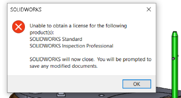

TIMEOUT如何作用
Option 文件是一个用来设置许可证服务器选项的文本文件。Options 文件可以用于各种类型的许可证：浮动许可证，临时/试用许可证，或是永久许可证。
使用说明
如果客户端的 SOLIDWORKS®会话在设定超时期间处于非活跃状态，则 TIMEOUT 选项将任何客户端许可证返回给许可证服务器。
在 SolidNetwork 许可证管理器安装目录中，创建一个文本文件：
1 | SolidNetWork_License_Manager_install_dir\Licenses\sw_d.opt |
在文件中添加以下一行：其中秒是大于或等于 900（15 分钟）的数字，这是允许的最短时间。
1 | TIMEOUTALL 900 |
例如：
假设你在超时选项中指定了 900 秒。客户启动 SOLIDWORKS，然后去吃午饭。15 分钟后，该许可证返回许可证服务器。客户端名称不再出现在许可证使用列表中，许可证将对其他用户开放。许可证服务器日志记录以下一行以表示许可证超时：(INACTIVE)是标识
1 | XX:XX:XX (SW_D) IN: "solidworks" (INACTIVE) |
超时回收影响
许可超时的客户端的 SOLIDWORKS 会话仍然活跃。如果该用户返回电脑并重新激活 SOLIDWORKS 会话，如果有新的许可，它会获得新的许可。如果客户端未重启 SOLIDWORKS 会话，或没有可用的许可，则会出现以下警告：

如果会话长时间处于非激活状态，或者客户端无法获得许可，点击消息中的确定会关闭 SOLIDWORKS。
要了解如何在选项文件中实现 TIMEOUT 关键词，请点击以下链接：